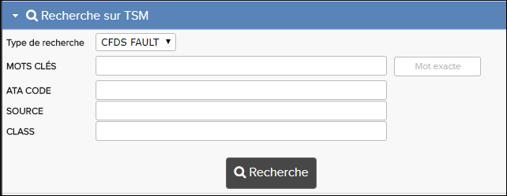

La fenêtre
Recherche sur TSM est disponible lorsque vous ouvrez
une publication de dépannage dans la bibliothèque.
Remarque : Lorsque vous lancez une recherche
TSM, le type de recherche par défaut est CFDS FAULT. Vous pouvez
configurer ceci par défaut àux AVERTISSEMENTS.

Recherche sur TSM
Remarque : Pour les données A350 et A380, il y aura aussi un champ de recherche pour les
critères du Code de défaut.
Les TSMs permettent l'identification, l'isolement et la correction des avertissements de
disfonctionnements des Avions signalés en vol et à prise de terre. Chacun des chapitres
standards contient les informations suivantes:
- Les symptômes de défaut (Correspondant à chaque procédure d'isolement de défaut)
- Procédures d'isolement de défaut (avec des liens vers les points importants et
symptômes de défaut)
- Tâche contenant des données de support
Les pages Symptôme de défaut sont divisées en trois colonnes principales:
- MISES EN GARDE / DYSFONCTIONNEMENTS
- MESSAGE D'ERREUR CFDS
- DÉFAUT PROCÉDURE D'ISOLEMENT
Remarque : Seulement, pour les publications A350 et A380 TSM, CMS
FAULT (Système de maintenance central) est le type de recherche au lieu de
CFDS FAULT. La fonctionnalité est la même.
Recherche sur TSM vous permet de rechercher des avertissements et défault CFDS. Ils
sont disponibles dans le champ Types de recherche l'option la plus
récente sélectionnée par l'utilisateur est automatiquement renseignée la prochaine fois que
l'utilisateur accède à la Recherche sur TSM.
Les catégories disponibles sont décrites dans les sections ci-dessous.
AVERTISSEMENTS
La recherche AVERTISSEMENTS vous permet de rechercher des messages d'avertissement
dans les TSMs et de trouver des liens vers des tâches correspondantes.
Le tableau qui suit décrit les options de recherche dans la catégorie MISES EN GARDE:
| Le Champ de recherche |
Description |
| Catégorie |
- ECAM: Limite la recherche aux avertissements de l'ECAM et l'état de l'ECAM
(systèmes inopérants et état de maintenance).
- SD: Limite la recherche aux avertissements de l'ECAM et l'état d’ECAM avec la
page du système (systèmes inopérants et l'état de maintenance). La sélection de
ce bouton radio révèle un champ de page système.
- LOCAL: Limite la recherche aux avertissements locaux (voyants lumineux et
indicateurs de veille).
- EFIS: Limits the search to flags and advisories (on ECAM and EFIS system
pages).
- OBSV: Limite la recherche aux drapeaux et des avis (Pages système ECAM et
EFIS).
- ALL: Permet la recherche de toutes les options.
|
| CFDS FAULT |
Le CFDS FAULT complet ou partiel que vous souhaitez rechercher. |
| MOTS-CLES |
Les mots-clés que vous voulez rechercher. |
| Mot exacte |
Cette case à cocher peut être sélectionnée si vous voulez une correspondance
exact au texte que vous avez saisi dans le champ MOTS-CLES
. |
| ATA CODE |
ATA code se réfère aux sections de publication. Le code ATA est représenté dans
ce format : AA-BB-CC-DDD. |
| Page système |
Mot clé de la page système à rechercher. |
Pour des étapes spécifiques, reportez-vous à Recherche sur Warning message.
CFDS FAULT
La recherche CFDS FAULT (Central d'affichage de défaut ) vous permet
de rechercher des messages d'erreur dans les publications TSM et de trouver des liens vers
des tâches correspondantes.
Le tableau suivant décrit les options de recherche dans le Catégorie
CFDS
FAULT:
Remarque : Seulement pour les publications TSM A350 et A380, CMS
FAULT (Système central d'affichage de défaut) est le type de recherche au
lieu de CFDS FAULT. La fonctionnalité est la même.
| Le Champ de recherche |
Description |
| MOTS-CLES |
Les mots-clés que vous voulez rechercher. |
| FAULT CODE |
Le fault code complet ou partiel que vous souhaitez rechercher. |
| Mot exacte |
Cette case à cocher peut être sélectionnée si vous voulez une correspondance
exacte au texte que vous avez saisi dans le champ
MOTS-CLES. |
| ATA CODE |
ATA code se réfère aux sections de publication. Le code ATA est représenté dans
ce format : AA-BB-CC-DDD. |
| SOURCE |
Valeur de la source à rechercher. |
| CLASS |
valeur de classe à rechercher. |
Pour des étapes spécifiques, reportez-vous à Rechercher les messages d'erreur CFDS.